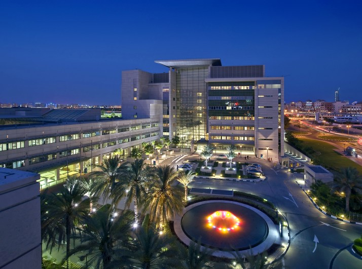

Bem-vindo ao site da Clínica da Bebel, uma instituição de saúde com um
legado de 150 anos de excelência no cuidado com pacientes de todas as
idades. Nossa clínica oferece uma gama abrangente de serviços médicos,
incluindo clínica geral, psicologia, pediatria e oftalmologia, com o
compromisso de proporcionar atendimento de qualidade e compassivo a cada
indivíduo que entra em nossas instalações.
Com uma equipe de profissionais altamente qualificados e experientes, estamos
dedicados a promover o bem-estar físico, mental e emocional de nossos pacientes.
Desde o tratamento de condições médicas comuns até o apoio psicológico e o cuidado
especializado em oftalmologia, estamos aqui para atender às necessidades de saúde
de toda a sua família.
Explorando nosso site, você encontrará informações sobre nossos serviços, nossa
equipe médica, nossas instalações modernas e as formas de agendar consultas. Na
Clínica da Bebel, estamos comprometidos em fornecer cuidados de saúde acessíveis e
personalizados, mantendo o legado de excelência que nos acompanha há mais de um
século. Seja bem-vindo à nossa clínica, onde sua saúde é nossa prioridade.
